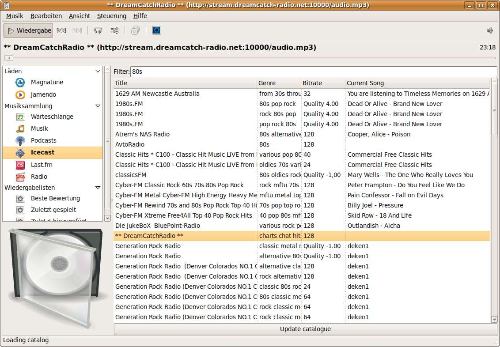

Description
This plugin for rhythmbox downloads the current list of radio streaming stations from xiph.org and displays it in rhythmbox under a separate tab.
News
Release 2.4
- Show currently playing title if station supports it
- Updating station list is much faster now
- The list is downloaded automatically only the first time now
rhythmbox-icecast-2.4.tar.gz
Release 2.3
rhythmbox-icecast-2.3.tar.gz
Release 2.2
rhythmbox-icecast-2.2.tar.gz
Release 2.0
rhythmbox-icecast-2.0.tar.gz
Downloads
There is a Ubuntu repository for jaunty 9.04:
deb http://ppa.launchpad.net/segler-alex/ppa/ubuntu jaunty main
There is a Ubuntu repository for karmic 9.10:
deb http://ppa.launchpad.net/segler-alex/ppa/ubuntu karmic main
Ubuntu package repository: https://launchpad.net/~segler-alex/+archive/ppa
Git source repository: http://github.com/segler-alex/rhythmbox-radio-browser
Contribute
E-Mail: segler_alex@web.de
Screenshots
